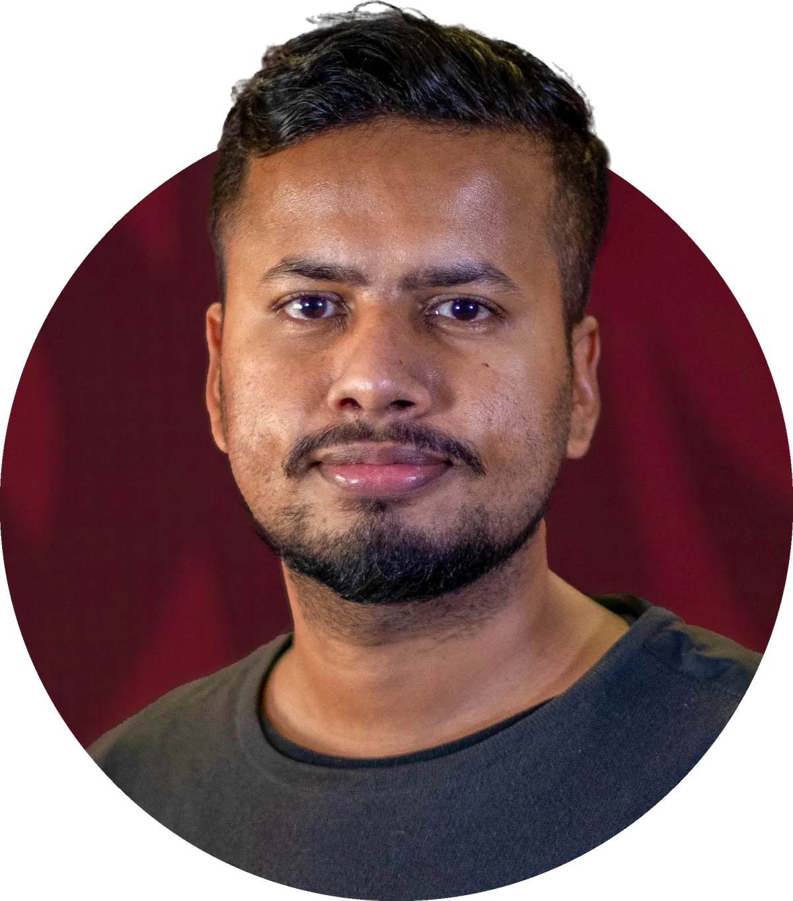

About
Md. Rakib Hasan
I am an Architectural Designer based in Seattle and an Associate Member of the AIA. Before graduate school I spent five years in practice in Bangladesh, leading facade and envelope design on 20 projects, about 150,000 sq ft, with 12 built or under construction.
I completed my M.Arch at Washington State University in 2026, where I also taught Digital Representation as a Graduate Teaching Assistant. In summer 2026 I interned at The Miller Hull Partnership in Seattle.
Earlier, as a construction project manager, I ran a news studio fit-out on site: coordinating trades, controlling materials and defending quantities in client audits. That experience shapes how I design today, with an eye on how buildings actually get built.
Experience
- Architectural InternThe Miller Hull Partnership, Seattle2026
- Graduate Teaching AssistantWSU School of Design + Construction2024 to 2026
- Architectural DesignerP2P, Chattogram2020 to 2024
- Junior Designer and Presentation SpecialistHATIL Project Solution, Dhaka2019 to 2020
- Construction Project ManagerAxis Development Ltd., Dhaka2019
Education
- Master of ArchitectureWashington State University2026
- Bachelor of ArchitectureKhulna University, Bangladesh2018
Awards
- Edward Allen Student AwardBuilding Technology Educators' Society2026
- NEWH Northwest ScholarshipNEWH Northwest2025
- Michael Mace ScholarshipPage Southerland Page Foundation2024, 2025
- R.H. Logan Fund ScholarshipWashington State University2025
- Excellent Design SubmissionPost Falls Silo Competition2025
- Best Architect, Design ExcellenceP2P, Bangladesh2024
- Runner-Up of 28 entries (team)Golpahar Temple Complex Competition, IAB2022
Certifications
- Associate MemberThe American Institute of Architects2026
- OSHA 30-Hour Construction SafetyHSI2026
- Procore Certified: BIM ManagerProcore Technologies2026
- Procore Certified: ArchitectProcore Technologies2026
- Associate Member (AH-411)Institute of Architects Bangladesh2020
Tools
- Modeling and BIMRevit, Rhino, Grasshopper, SketchUp, 3ds Max
- Drafting and graphicsAutoCAD, Adobe Creative Suite
- PerformanceClimateStudio, Sefaira
- Rendering and filmD5 Render, Lumion, DaVinci Resolve, After Effects